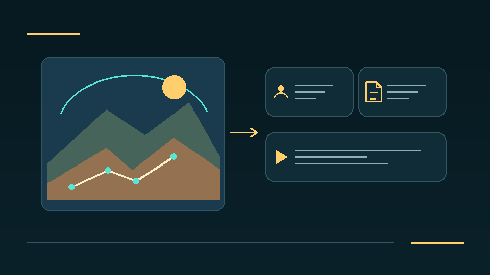
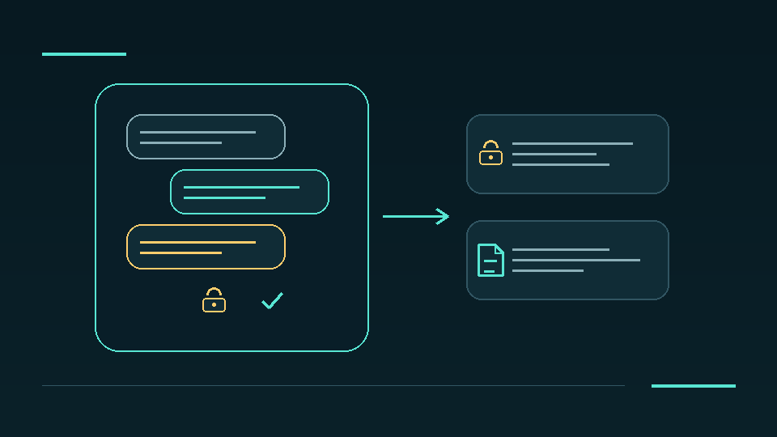
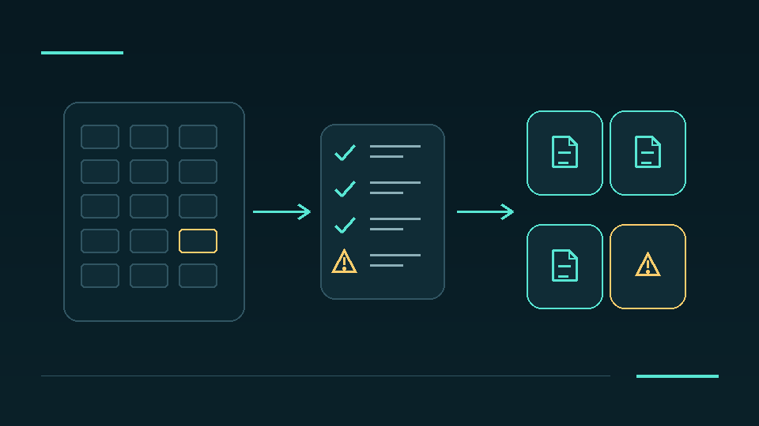

Start with a useful task or carry an existing product forward. These illustrated scenarios show decisions, inputs and outcomes you can work through with the suite.
These product concepts show a few possible uses for the suite. Each concept retains the lettering printed in the original artwork. Release versions are listed on the repository home page.
To download the offline gallery, sign in to GitHub and open a successful validation run for main. Under Artifacts, download product-showcase, then extract Showcase.zip and open index.html.
A connected workspace
Original product concept · English artwork
The campaign brings together a desktop operations map, a personal agenda and a coastal game world.Companion coverA developer can move from a focused repair to a reusable project workflow with the same source and review controls.
A laptop and three phones show My Day’s daily agenda, route options, confirmation and the updated plan.Technical workflowStart with a daily planning task. Preserve appointments and route decisions while adding a reviewed change that works across product surfaces.
Sunridge Studio combines a coastal game world, its explorer and the matching character development art.Technical workflow

Carry the original explorer and coastal setting through game design, asset production and a playable review. Record a device claim only after observing the actual build.
The assistant compares a game controller and shows a separate confirmation before surfacing the order.Technical workflow

Check product details, stage the purchase as an example, then specify the exact authorized target and confirmation. Keep a pending effect open until a verified receipt arrives.
Global Logistics shows a European hub network and a shipment exception, with route options, estimated arrivals and a reviewed outcome.Technical workflowInspect a shipment exception, compare feasible routes, review the affected account and record the outcome once the operational state confirms it.
A shipment spreadsheet sits beside prepared documents and a highlighted row with a missing delivery address.Technical workflow

Validate three shipment rows and hold the fourth, which has no address. After clarification, verify the corrected row and generate its document without duplicating the earlier output.
A custom specialist checks an API contract, identifies a type mismatch and hands the change off for review.Technical workflowStart with an API contract audit. Give a named specialist the exact contract, evidence and return condition, then use an independent check to verify the type mismatch and proposed change.
Begin with file paths and exact IDs. When measured misses justify retrieval, compare lexical, semantic and hybrid approaches over the same authorized corpus. Cite the current source or abstain.
Give each case an expected outcome, run it against a fixed source and inspect the actual artifact or tool effect. Keep a pending result visible and compare the same cases before broad adoption.
Open a local project, inspect its pinned next action, preview a draft and use the Orchestrator route. Confirm a runtime effect from the observed output and its evidence.